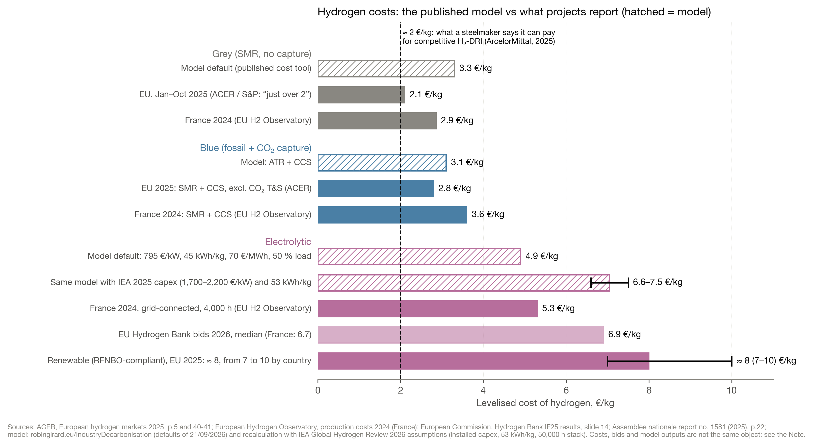

L'hydrogène dans l'industrie : usages, technologies, coûts, projets
69 faits sourcés (identifiants H2I-01 à 69) tirés de 27 rapports, 39 projets français datés, trois figures (modèle contre constaté, projets français, flexibilité croisée avec le CAPEX). Le § 7 traite de la flexibilité et des infrastructures, le § 8 de pourquoi l'électrolyse a déçu.
Cette note est le compagnon du thème
Industry/Hydrogene_industrie, ouvert le 29/09/2026 pour le
projet d’approfondissement du PESTO 2026 « technologies de décarbonation
de l’industrie utilisant l’hydrogène ». Elle s’appuie sur trois choses :
une table de 69 faits sourcés et paginés
(data/faits_hydrogene.md, identifiants H2I-xx), 27 rapports
publics archivés dans bibliographie/, et l’outil de coût
des routes industrielles déjà publié (https://www.robingirard.eu/IndustryDecarbonisation.html,
thème Industry/Economie_routes), qu’elle confronte aux
coûts constatés.
1. En cinq phrases
- L’hydrogène est d’abord un intrant chimique fossile : 103 Mt consommées dans le monde en 2025 (raffinage 44 Mt, ammoniac, méthanol et fer préréduit 57 Mt), dont moins de 1 % « bas-émissions ». En France, ≈ 1 Mt par an (RTE, périmètre large), dont ≈ 400 kt produites par des vaporeformeurs et donc substituables par un électrolyseur (H2I-01 à 04).
- Produire de l’hydrogène par électrolyse est mûr (TRL 9) ; beaucoup d’usages nouveaux ne le sont pas : fer préréduit 100 % H₂ au TRL 6, e-kérosène par la voie méthanol au TRL 5, et même le reformage autotherme avec captage à 90 % n’est qu’au TRL 5 selon l’AIE (H2I-09 à 12).
- Le coût reste 2,5 à 4 fois celui de l’hydrogène gris : un peu plus de 2 €/kg pour le vaporeformage en Europe en 2025, 5,3 €/kg pour l’électrolyse sur réseau en France, ≈ 7 €/kg dans les offres à la Banque européenne de l’hydrogène, ≈ 8 €/kg pour l’hydrogène renouvelable au sens de l’UE (H2I-19 à 21). L’outil publié donnait 4,9 €/kg, optimiste : avec les CAPEX installés réels, il donne 6,6 à 7,5 €/kg (H2I-28) ; il a été recalé sur l’AIE le 10/10/2026 (v2.1) et donne désormais 7,1 €/kg.
- Le déploiement est très loin des plans : 50 MW d’électrolyse en service en France fin 2025, soit ≈ 1 % de la cible 2030 (4,5 GW) ; 4 % des projets français ont une décision finale d’investissement ; dans le monde, 16 % de la production bas-émissions annoncée pour 2030 est décidée (H2I-29, 30, 62).
- Décarboner l’existant d’abord : raffinage, ammoniac et méthanol sont les usages « sans regret », et ce sont eux qui signent ; l’acier recule — ArcelorMittal a renoncé à son réacteur de réduction directe à Dunkerque et construit un four électrique sans hydrogène pour 2029 (H2I-32, 33, 67, 68).
2. Où va l’hydrogène aujourd’hui
| Monde, 2025 (AIE) | France (RTE, ≈ 2019) | |
|---|---|---|
| Consommation | 103 Mt/an, +3 % | ≈ 1 Mt/an, dont H₂ coproduit |
| Raffinage | 44 Mt | 60 % |
| Ammoniac et engrais | ≈ 34 Mt (60 % de l’industrie) | 25 % |
| Méthanol, chimie | ≈ 17 Mt | 10 % |
| Fer préréduit (acier) | ≈ 6 Mt | 1 % |
| Production | gaz sans captage 61 %, charbon 22 %, coproduit 15 % | vaporeformage 40 %, oxydation d’hydrocarbures 40 %, charbon 15 %, chlore-soude 5 % |
| Bas-émissions | ≈ 1 Mt (< 1 %) | ≈ 8 kt au plus par électrolyse de l’eau |
Sources : AIE, Global Hydrogen Review 2026, p. 43-45 (H2I-01, 02) ; RTE (2020), p. 14-15 (H2I-03) ; SNH 2025, p. 9-10 (H2I-04).
Trois chiffres français qui ne se contredisent pas : 237 kt (H₂ pur, statistique publique du SDES, 2024), ≈ 900 kt à 1 Mt (tout l’hydrogène, y compris en mélange et coproduit, RTE) et ≈ 400 kt (le gisement substituable, produit par vaporeformage, SNH 2025). Toujours dire lequel on cite (H2I-05).
La demande fossile existante se contracte d’elle-même : arrêt de l’ammoniac à Grandpuits (≈ 30 % des engrais français) en janvier 2025, fermeture du vapocraqueur de Port-Jérôme en 2024, liquidation de Vencorex ; ≈ 66 % des engrais azotés sont importés (H2I-06). Décarboner l’existant suppose que l’existant survive.
3. Les technologies et leur maturité
Niveaux de maturité (TRL) de l’AIE, mi-2026 (tableau complet :
data/trl_technologies.csv, 32 lignes).
| Étape | Technologie | TRL | Exemple phare |
|---|---|---|---|
| Production | Vaporeformage (SMR) | mature | parc mondial ; Port-Jérôme (Air Liquide) |
| SMR + captage du seul CO₂ de procédé | 9 | Cryocap, Port-Jérôme (CO₂ valorisé, non stocké) | |
| SMR à captage élevé | 6 | — | |
| Reformage autotherme + captage (> 90 %) | 5 | projets au Royaume-Uni, aux Pays-Bas | |
| Électrolyse alcaline / PEM | 9 / 9 | Kuqa (260 MW, Chine) ; Normand’Hy (200 MW, PEM) | |
| Électrolyse haute température (SOEC) / AEM | 8 / 7 | Genvia (Béziers), Gen-Hy (Allenjoie) | |
| Pyrolyse du méthane (plasma / catalytique) | 8 / 7 | — | |
| Hydrogène naturel | 5 | Bourakébougou (Mali, ≈ 5 t/an) | |
| Usages | Ammoniac à partir d’H₂ électrolytique | 8 | Yara Porsgrunn (24 MW, 2024) |
| e-méthanol | 8 | Kassø (Danemark, 52,5 MW, 2025) | |
| Fer préréduit 100 % H₂ puis four électrique | 6 | Stegra (Boden), démarrage 2026 | |
| H₂ en mélange dans un DRI au gaz | 7 | thyssenkrupp Duisbourg (gaz d’abord) | |
| H₂ en raffinerie (substitution) | 9 pour l’usage | appel d’offres TotalEnergies | |
| e-kérosène Fischer-Tropsch / voie méthanol | 7 / 5 | un seul FID dans le monde (Texas) | |
| Chaleur haute température par H₂ | 8 | essais verriers (Pilkington) | |
| Infrastructures | Stockage en cavité saline | mature en usage | HyPSTER (Etrez) : démonstrateur de 3 t |
| Canalisations de gaz reconverties | 8 | 1 636 km d’H₂ en service dans l’UE |
Sources : AIE, GHR 2026, fig. 6.10-6.11 p. 191-192 ; guide ETP (H2I-09 à 16).
Lecture. La maturité ne manque pas là où on la cherche d’habitude : les électrolyseurs se vendent (et la Chine en fabrique 58 GW/an de capacité pour moins de 5 GW commandés, H2I-69). Elle manque sur les usages nouveaux (acier, e-kérosène) et sur le captage à fort taux : l’outil de coût classe l’ATR + CCS « commercial », l’AIE au TRL 5 (H2I-10). Et mûr ne veut pas dire fiable : la plus grande usine chinoise (Kuqa) n’a produit que ≈ 35 % de l’attendu la première année (H2I-09, secondaire).
4. Ce que coûte l’hydrogène

D’où vient le coût d’un kilo d’hydrogène électrolytique. Trois postes : le CAPEX (rapporté au nombre d’heures de fonctionnement), l’électricité (≈ 53 kWh par kg, soit 63 % sur PCI, H2I-18) et le réseau et les taxes. À 70 €/MWh, l’électricité seule fait 3,7 €/kg. Le CAPEX installé d’un électrolyseur occidental est de 1 920 à 2 500 $/kW (≈ 1 700-2 200 €/kW), contre 550-1 100 $/kW pour un électrolyseur chinois installé en Chine ; le stack n’en fait que 5 à 20 %, l’ingénierie et les aléas plus de la moitié (H2I-17).
Le modèle publié face aux données (détail :
data/faits_hydrogene.md, « Confrontation au modèle »).
| Grandeur | Outil publié (v2.1, recalé sur l’AIE le 10/10/2026 ; avant : défaut du 21/09/2026) | Données 2025-2026 | Lecture |
|---|---|---|---|
| CAPEX électrolyseur | ≈ 1 950 €/kW (AIE 2025 ; avant ≈ 795, valeur 2030) | 1 700-2 200 €/kW installés | recalé |
| Consommation | 53 kWh/kg (avant 45) | ≈ 53 (AIE), 56 (SNH) | recalé |
| Coût électrolytique | 7,1 €/kg (avant 4,9) | 5,3 (FR, réseau) à ≈ 8 (RFNBO) | dans la fourchette (avant : optimiste de 1,7-2,6 €/kg) |
| Couple prix × charge | 70 €/MWh à 50 % de charge | 70 €/MWh = un ruban (≈ 90 %) | incohérent : les deux curseurs vont ensemble |
| Vaporeformage | 3,3 €/kg | 2,1 (UE) à 2,9 (FR) | pessimiste : l’écart gris-vert est sous-estimé |
| ATR + CCS | 3,1 €/kg, « commercial » | 2,8-3,6 €/kg, TRL 5 | coût plausible, maturité surestimée |
| Acier DRI-H₂ | 772 €/t (+48 % ; avant 661, +26 %) | ≈ 1 000 €/t avec 7,5 €/kg et 80 kg/t | optimiste (51 kg d’H₂/t, hors réchauffeur) |
Qui peut payer. Selon l’AIE, sans politique publique, les utilisateurs peuvent payer moins de 2 $/kg dans la plupart des secteurs à l’horizon 2035 — et rien du tout dans l’acier : le DRI-H₂ coûte plus cher que le haut fourneau même avec un hydrogène gratuit, faute de prix du CO₂ suffisant (H2I-25). ArcelorMittal dit qu’il lui faudrait un hydrogène à 2 €/kg ; on lui propose du 7 €/kg (H2I-22). Les secteurs qui paient le plus sont ceux où l’hydrogène est déjà là : ammoniac et raffinage (un prix du CO₂ de 150 $/t y vaut 1,4-1,5 $/kg d’H₂). Côté carburants, l’e-kérosène coûte ≈ 7 520 €/t, douze fois le kérosène fossile (EASA, H2I-23).
5. Projets et acteurs en France

| Projet | Porteur, lieu | Usage | Taille | État (date) |
|---|---|---|---|---|
| Normand’Hy | Air Liquide, Port-Jérôme | raffinage (TotalEnergies achète ≈ la moitié) | 200 MW, 28 kt/an ; 450 M€ dont 190 M€ PIIEC | construction ; mise en service non annoncée au 29/09/2026 |
| Appel d’offres H₂ vert | TotalEnergies | raffineries européennes | 500 kt/an visées, 200 kt contractées | en cours (2024-2026) |
| Lhyfe | Bouin, Buléon, Bessières ; Le Cheylas, Croixrault | mobilité, industrie | 21 MW en service (dont 10 en Allemagne) ; 15 MW en construction en France | portefeuille avancé réduit de 4,1 à 1,1 GW |
| GravitHy | Fos-sur-Mer | fer préréduit 100 % H₂ (2 Mt/an) | ≈ 750 MW, 120 kt/an | dossiers déposés ; FID glissé à 2027 |
| ArcelorMittal Dunkerque | Dunkerque | DRI puis 100 % H₂ | 850 M€ d’aide jamais versés | abandonné (2025) ; four électrique sans H₂ décidé le 10/02/2026 |
| H2V Dunkerque | Loon-Plage | DRI d’ArcelorMittal, puis e-carburants | 200 → < 50 MW | en suspens ; canalisation DHUNE en pause |
| eM-Rhône | Elyse Energy, Les Roches | e-méthanol | 61 MW aidés sur 210 | lauréat du mécanisme de soutien (07/2026) |
| FertHySomme | FertigHy, Somme | engrais bas carbone | 95 MW aidés sur 200 | lauréat du mécanisme de soutien (07/2026) |
| H4 Marseille Fos | H2V + Hy2gen | e-SAF (75 kt/an) | contrat nucléaire EDF de ≈ 150 MW sur 10 ans dès 2032 | annoncé |
Liste complète : data/projets_france.csv (39 lignes,
statut daté et source). Équipementiers : McPhy a été
repris par John Cockerill en juillet 2025 ; l’usine Elogen de Vendôme
est suspendue depuis février 2025 ; Genvia (SOEC) prépare Béziers ; le
fonds Hy24 gère 2 Md€ (H2I-38).
6. Les politiques publiques
- Stratégie nationale (avril 2025) : jusqu’à 4,5 GW d’électrolyse en 2030 et 8 GW en 2035, contre 6,5 GW en 2030 dans la stratégie de 2020 ; production nationale privilégiée jusqu’en 2035 (H2I-41). Sur 9 Md€ annoncés en 2020, 4,3 Md€ étaient fléchés début 2026 (H2I-42).
- Mécanisme de soutien à la production : 1 GW en plusieurs vagues pour ≈ 4 Md€, prime fixe sur 15 ans, usages industriels directs. Premiers lauréats le 22/07/2026 : 3 projets, 161 MW aidés, 778 M€ sur 15 ans, soit ≈ 2 à 3 €/kg selon notre calcul — 3 à 5 fois les primes européennes (H2I-43, 44).
- Banque européenne de l’hydrogène : primes de 0,37-0,48 €/kg (2024), 0,20-0,60 (2025), 0,44-3,49 (2026). À la 2ᵉ enchère, 6 projets sur 15 ont signé ; aucun lauréat français (H2I-49).
- Obligations européennes : RED III impose 42 % d’hydrogène renouvelable (RFNBO) dans l’hydrogène de l’industrie en 2030 et 60 % en 2035 (transposition française incomplète) ; ReFuelEU impose 1,2 % d’e-kérosène en 2030 ; l’allocation gratuite de quotas disparaît d’ici 2034 et le mécanisme d’ajustement carbone aux frontières couvre l’hydrogène et l’ammoniac depuis le 1ᵉʳ janvier 2026 (H2I-46, 47, 51, 52).
- Trois labels à ne pas confondre : « bas-émissions »
(AIE), « RFNBO » (UE, renouvelable, avec additionnalité et corrélation
temporelle horaire dès
- et « bas carbone » (UE, −70 %, seuil de 3,38 kgCO₂e/kg). Un électrolyseur sur le réseau français passe le seuil bas carbone grâce à la moyenne du mix, pas grâce à un contrat nucléaire, dont la prise en compte est renvoyée à 2028 (H2I-45, 48).
7. Flexibilité et infrastructures

Ce que dit la figure (calcul de ce thème,
plot_hydrogene.py ; table
data/lcoh_vs_heures_fr_2025.csv). Avec les prix réels de
2025 (61 €/MWh en moyenne, 509 heures à prix négatif dans ces données
horaires, 513 selon RTE), un électrolyseur à 500 €/kW a intérêt à ne
tourner que ≈ 2 800 h (2,1 €/kg contre 4,0 €/kg en continu) ; à 1 350
€/kW, l’optimum est vers 4 300 h (3,5 contre 4,6 €/kg) ; à 2 200 €/kW,
vers 5 500 h (4,6 contre 5,2 €/kg). Plus l’électrolyseur est
cher, moins la flexibilité rapporte — c’est la conviction
ADR-013 du coffre. Mais avec la volatilité de 2025, elle rapporte encore
≈ 24 % à 1 350 €/kW, bien plus que les moins de 6 % de la campagne DGEC
(prix modélisés 2030-2035) : l’ADR-013 citait justement « une volatilité
bien plus forte » comme ce qui la ferait réviser. Limite
décisive du calcul : il ignore que l’usine en aval veut un
débit régulier. Tourner 4 000 h, c’est stocker l’hydrogène ou arrêter
l’usine ; c’est ce coût-là qui manque ici.
Le même calcul, année par année
(data/lcoh_flexibilite_par_annee.csv) : le gain de la
flexibilité sur le fonctionnement en continu dépend du régime de
prix.
| Année | Prix moyen (€/MWh) | Heures négatives | Gain à 500 €/kW | Gain à 1 350 €/kW | Gain à 2 200 €/kW |
|---|---|---|---|---|---|
| 2019 | 39 | 27 | 8 % | 1,5 % | 0,3 % |
| 2020 | 32 | 102 | 12 % | 2 % | 0,6 % |
| 2021 | 109 | 64 | 42 % | 29 % | 22 % |
| 2022 | 276 | 4 | 46 % | 31 % | 25 % |
| 2023 | 97 | 147 | 36 % | 13 % | 7 % |
| 2024 | 58 | 352 | 44 % | 18 % | 8 % |
| 2025 | 61 | 509 | 49 % | 24 % | 12 % |
Dans les années calmes d’avant la crise, un électrolyseur cher n’a presque rien à gagner à la flexibilité (ADR-013) ; depuis 2021, la volatilité — celle de la crise du gaz, puis celle du solaire — lui en fait gagner 13 à 31 %. Le résultat dépend donc d’abord du profil de prix qu’on suppose pour 2030 : c’est la question à poser à tout chiffrage (modélisé ou historique).
Ce que disent RTE et les textes.
- La flexibilité vaut ≈ 10 €/MWh en moyenne sur le coût d’approvisionnement, jusqu’à ≈ 2 €/kg avec un stockage de 1 000 h ; gain net de 0,5 à 1 €/kg pour un bassin situé à 100 km d’une cavité saline (H2I-54).
- La corrélation horaire imposée à l’hydrogène RFNBO dès 2030 plafonne le facteur de charge vers 70 % : la règle lie l’électrolyseur au profil du parc renouvelable contracté, pas aux heures utiles au système (H2I-58).
- RTE a divisé ses attentes : 5 à 16 TWh d’électrolyse en 2030 (BP2025) contre ≈ 24 TWh (BP2023) ; plus de 10,5 GW ont pourtant demandé un raccordement (H2I-53).
- Canalisations : le plan des gestionnaires (NaTran, Teréga) prévoit 2 980 km en 2032, la stratégie de l’État ≈ 500 km, soit un facteur 6. HY-FEN (Fos → Allemagne, 4,5 Md€) est en concertation, BarMar (H2Med) sans FID, MosaHYc visé pour 2029 (H2I-60).
8. Pourquoi l’électrolyse a déçu
- Annoncé ≠ décidé : le portefeuille mondial pour 2030 est passé de 37 à 27 Mt en un an ; ≈ 9 % des GW d’électrolyse annoncés ont un FID ; les nouveaux FID ont baissé de 20 % en 2025 (H2I-62, 63).
- Pas d’acheteur ferme : 1,7 Mt/an de contrats d’achat dans le monde, dont 20 % seulement fermes ; FlagshipONE (e-méthanol, Danemark) abandonné faute de contrats (H2I-15, 63).
- Des objectifs fixés sans analyse : la Cour des comptes européenne juge les 20 Mt de l’UE pour 2030 irréalistes et note que les règles RFNBO ont été adoptées sans étude d’impact (H2I-66).
- L’échelle de Liebreich met en haut l’existant (engrais, hydrogénation, méthanol, raffinage), en bas la chaleur basse température et les voitures. Même ordre que l’analyse du coût acceptable par l’AIE (H2I-67).
9. Pièges
- Annoncé ≠ FID ≠ construction ≠ service (France : 6,7 GW en projet, 250 MW décidés, 50 MW en service).
- MW électriques ≠ tonnes par an : t/an = MW × heures ÷ kWh/kg (260 MW ↔︎ 30 kt/an à 6 500 h et 56 kWh/kg) ; les MW « aidés » sont inférieurs aux MW construits.
- Coût installé ≠ coût du stack ; PCI ≠ PCS (53 kWh/kg = 63 % PCI mais 74 % PCS) ; H₂ pur ≠ H₂ total.
- Une prime d’enchère n’est pas un coût ; un coût moyen de système n’est pas le prix payé par l’électrolyseur (ADR-014).
- Bas-émissions, RFNBO, bas carbone : trois labels, trois périmètres.
10. Questions à creuser
- Avec l’outil de coût
(
robingirard.eu/IndustryDecarbonisation.html, onglet Hydrogène) : passer le CAPEX de l’électrolyse à 2× et la consommation à 53 kWh/kg ; que devient l’ammoniac électrolytique ? À quel prix du CO₂ la route bascule-t-elle ? Même exercice pour l’acier DRI-H₂. - Pour qui l’hydrogène bas carbone est-il rentable en France en 2030 (raffinage, ammoniac, méthanol, acier), avec quelles aides (mécanisme de soutien, RED III, fin des quotas gratuits) ?
- Flexibilité : quel stockage faut-il pour qu’un électrolyseur à 1 350 €/kW tourne 4 000 h tout en livrant un débit continu ? Le gain de la figure tient-il ?
- Dunkerque (visite du 6 au 9 octobre) : d’où viendra le fer préréduit du futur four électrique d’ArcelorMittal, et que devient le bassin hydrogène (H2V, DHUNE) ?
- Un cas complet : H4 Marseille Fos (e-SAF, contrat nucléaire EDF) — technologie, électricité, financement.
11. Reproduire
python3 preparer_prix_horaires.py # prix day-ahead France 2025, heure par heure (Energy-Charts)
python3 plot_hydrogene.py # les trois figures, dans output/editorial/Depuis ce dossier. data/ et bibliographie/
sont hors dépôt (convention du dossier) :
bibliographie/README.md dit d’où vient chaque fichier.
12. Sources principales
- AIE (juin 2026), Global Hydrogen Review 2026 et son annexe d’hypothèses — https://www.iea.org/reports/global-hydrogen-review-2026.
- Gouvernement (avril 2025), Stratégie nationale pour le développement de l’hydrogène décarboné ; communiqué des lauréats du mécanisme de soutien (22/07/2026).
- France Hydrogène (2026), rapport annuel de la filière 2025.
- ACER (2025), European hydrogen markets — 2025 monitoring report.
- RTE, Bilan prévisionnel 2023 (chapitre 11, hydrogène) et 2025 ; étude flexibilité des électrolyseurs en Auvergne-Rhône-Alpes (2025).
- Assemblée nationale (juin 2025), rapport n° 1581 sur l’aide à la décarbonation d’ArcelorMittal Dunkerque.
- Cour des comptes européenne (2024), rapport spécial 11/2024 sur l’hydrogène renouvelable.
- Commission européenne (2026), résultats des enchères IF24 et IF25 de la Banque européenne de l’hydrogène.
- Liebreich (2023), Clean Hydrogen Ladder v5.0.
- Littérature académique :
bibliographie/scanlitt_2026-09-29.md(Reksten et al. 2022 sur le CAPEX des électrolyseurs ; Lopez et al. 2023 sur l’acier ; Hunt et Tilsted 2024 sur le financement).
Télécharger la version PDF (les liens y restent actifs).
Notes voisines
- Ce que paie un électrolyseur pour accéder au réseau électrique en Europe
- Financer la transition : qui paie, à quel taux, pourquoi (note, 29/09/2026) + classeur LCOE vs coût du capital
- Les carburants d'aviation durables : six filières et leurs ordres de grandeur
- Les procédés industriels lourds : comment ils marchent, et où sort le CO₂
- Ce que coûte chaque route de décarbonation de l'industrie
- Capter le CO₂ : d'où il vient, comment on l'attrape, ce qu'on en fait, ce que ça coûte